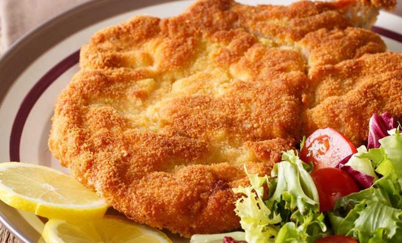

CHICKEN MILANESE
This chicken milanese was made after I couldn't find a recipe that would work with pasta.
It's crispy, quick to make, and delicious!
Ingredients
- 2 large eggs
- kosher salt and ground black pepper to taste
- 1/4 cup all-purpose flour
- 1 cup Italian seasoned bread crumbs
- 1 cup Italian seasoned bread crumbs
- ¼ cup vegetable oil for frying
- 1 lemon, cut into wedges
Steps
- Step 1: Preheat the oven to 200 degrees F (95 degrees C).
- Step 2: Beat eggs with salt and pepper in a shallow dish.
Spread flour in another dish and bread crumbs in a third dish.
- Step 3: Working with one piece at a time, gently press chicken into flour to
oat and shake off any excess. Dip into beaten eggs, then press into bread crumbs.
Gently toss between your hands so excess bread crumbs can fall away. Place breaded chicken onto
a plate while breading the rest; do not stack.
- Step 4: Heat vegetable oil in a large skillet over medium heat.
Pan-fry chicken in batches of 2 or 3 pieces until golden brown and no longer pink in the center,
2 to 4 minutes per side. An instant-read thermometer inserted into the center should read at least
165 degrees F (74 degrees C). Transfer cooked chicken to a baking sheet and keep warm in the
preheated oven while cooking remaining chicken.
- Step 5: Serve with lemon wedges.
Turnaround time to cook the recipe
As I mentioned in the 4th step, the time to cook the milanese is around 15 min.
